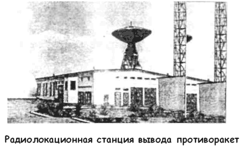
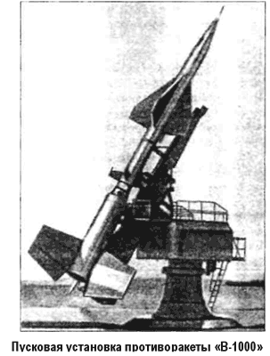

Советская система ПРО
В Советском Союзе проблеме противоракетной обороны начали уделять внимание сразу после окончания Второй мировой войны. В начале 50-х годов в НИИ-4 Минобороны СССР и в НИИ-885, занимавшихся разработкой и применением баллистических ракет, были проведены первые исследования возможности создания средств ПРО. В этих работах, предлагались схемы оснащения противоракет двумя типами систем наведения. Для противоракет с телеуправлением предлагалась осколочная боевая часть с низкоскоростными осколками и круговым полем поражения.
Для противоракет с самонаведением предлагалось использовать боевую часть направленного действия, которая вместе с ракетой должна была поворачиваться в сторону цели и взрываться по информации от головки самонаведения, создавая наибольшую плотность поля осколков в направлении на цель.
Один из первых проектов глобальной противоракетной обороны страны был предложен Владимиром Челомеем.
В 1963 году он предложил использовать разработанные в его ОКБ-52 межконтинентальные ракеты «УР-100» для создания системы ПРО «Таран». Предложение было одобрено и постановлением ЦК КПСС и Совета Министров СССР от 3 мая 1963 года была задана разработка проекта системы ПРО «Таран» для перехвата баллистических ракет на заатмосферном участке траектории.
В системе должна была применяться ракета «УР-100» («8К84») в варианте противоракеты со сверхмощной термоядерной боевой частью, мощностью не менее 10 мегатонн.
Ее габариты: длина — 16,8 метра, диаметр — 2 метра, стартовая масса — 42,3 тонны, масса головной части — 800 килограммов.
Противоракета смогла бы поразить цели на высотах около 700 километров, дальность поражения цели — до 2000 тысяч километров. Вероятно, для гарантированного поражения всех целей требовалось развернуть несколько сотен пусковых установок с противоракетами системы «Таран».
Особенностью системы являлось отсутствие коррекции противоракеты «УР-100» во время полета, что обеспечивалось бы точным целеуказанием РЛС.
В новой системе должны были применяться радиолокационные средства системы «Дунай-3», а также многоканальная РЛС «ЦСО-С», вынесенная на 500 километров от Москвы в сторону Ленинграда. По данным этой РЛС, работающей в диапазоне длин волн от 30 до 40 сантиметров, должно было осуществляться обнаружение вражеских ракет и пролонгация координат точек перехвата и момента прихода целей в эти точки. Станция «ЦСО-С» включалась по сигналам узлов системы предупреждения о ракетном нападении «РО-1» (город Мурманск) и «РО-2» (город Рига).

В 1964 году работы по системе «Таран» были прекращены — немалую роль в истории создания этой системы сыграла отставка Никиты Хрущева. Однако сам Владимир Челомей в дальнейшем признался, что отказался от системы «Таран» из-за уязвимости системы дальнего радиолокационного обнаружения, которая являлась ключевым звеном его системы.
Кроме того, противоракете требовался стартовый ускоритель — сходная баллистическая ракета в качестве противоракеты не годится из-за ограничений по скорости и маневренности при жестком лимите времени для перехвата цели.
Успеха добились другие. В 1955 году Григорий Васильевич Кисунько, главный конструктор СКБ-30 (структурное подразделение крупной организации по ракетным системам СБ-1), подготовил предложения по полигонной экспериментальной системе ПРО «А».
Проведенные в СБ-1 расчеты эффективности противоракет показали, что при существующей точности наведения поражение одной баллистической ракеты обеспечивается применением 8-10 противоракет, что делало систему малоэффективной.
Поэтому Кисунько предложил применить новый способ определения координат высокоскоростной баллистической цели и противоракеты — триангуляцию, то есть определение координат объекта по замерам дальности до него от РЛС, разнесенных на большое расстояние друг от друга и расположенных в углах равностороннего треугольника.
В марте 1956 года силами СКБ-30 был выпущен эскизный проект противоракетной системы «А».
В состав системы входили следующие элементы: радиолокаторы «Дунай-2» с дальностью обнаружения целей 1200 километров, три радиолокатора точного наведения противоракет на цель, стартовая позиция с пусковыми установками двухступенчатых противоракет «В-1000», главный командно-вычислительный пункт системы с ламповой ЭВМ «М-40» и радиорелейные линии связи между всеми средствами системы.

Решение о строительстве десятого государственного испытательного полигона для нужд ПВО страны было принято 1 апреля 1956 года, а в мае была создана Государственная комиссия под руководством маршала Александра Василевского для выбора места его размещения, а уже в июне военные строители приступили к созданию полигона в пустыне Бетпак-Дала.
Первая работа системы «А» по перехвату противоракетой баллистической ракеты «Р-5» прошла успешно 24 ноября 1960 года, при этом противоракета не оснащалась боевой частью. Затем последовал целый цикл испытаний, часть из которых закончились неудачно.
Главное испытание состоялось 4 марта 1961 года. В тот день противоракетой с осколочно-фугасной боевой частью была успешно перехвачена и уничтожена на высоте 25 километров головная часть баллистической ракеты «Р-12», запущенной с Государственного центрального полигона. Боевая часть противоракеты состояла из 16 тысяч шариков с карбид-вольфрамовым ядром, тротиловой начинки и стальной оболочки.
Успешные результаты испытаний системы «А» позволили к июню 1961 года завершить разработку эскизного проекта боевой системы ПРО «А-35», предназначенной для защиты Москвы от американских межконтинентальных баллистических ракет.
В состав боевой системы предполагалось включить командный пункт, восемь секторных РАС «Дунай-3» и 32 стрельбовых комплекса. Завершить развертывание системы планировалось к 1967 году — 50-летию Октябрьской революции.
Впоследствии проект претерпел изменения, но в 1966 году система все же оказалась практически полностью готова к принятию на боевое дежурство.
В 1973 году генеральный конструктор Григорий Кисунько обосновал основные технические решения по модернизированной системе, способной поражать сложные баллистические цели. Перед системой «А-35» была поставлена боевая задача по перехвату одной, но сложной многоэлементной цели, содержащей наряду с боевыми блоками, легкие (надувные) и тяжелые ложные цели, что потребовало проведения существенных доработок вычислительного центра системы.
Это была последняя доработка и модернизация системы «А-35», которая завершилась в 1977 году представлением Госкомиссии новой системы ПРО «А-35М».
Система «А-35М» была снята с вооружения в 1983 году, хотя ее возможности позволяли нести боевое дежурство до 2004 года.